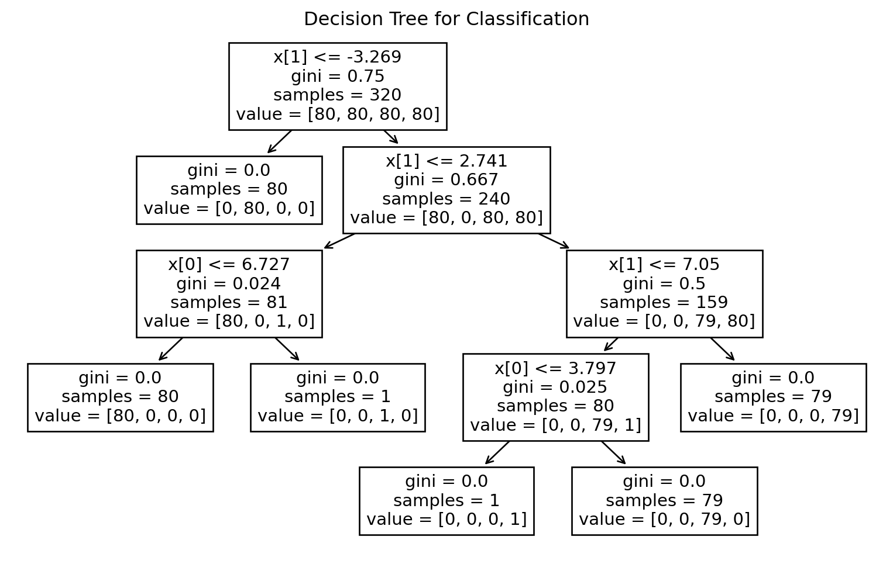
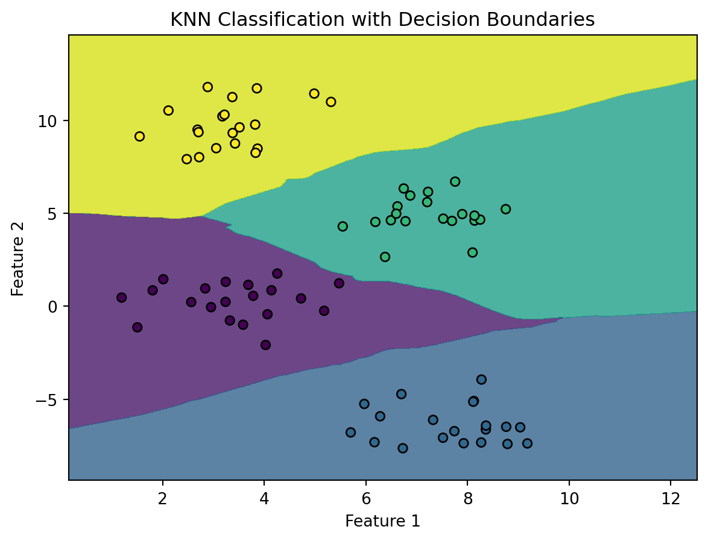

In machine learning, classification reigns supreme as a powerful technique for predicting categorical outcomes. From spam filtering in emails to image recognition in autonomous vehicles, classification algorithms play a pivotal role in making sense of the world’s data. This blog will unravel the intricacies of classification, exploring its principles, algorithms, and real-world applications.
Understanding Classification:
Classification is a type of supervised learning where the algorithm learns from labeled training data to make predictions or decisions about new, unseen data. The goal is to categorize input data into predefined classes or labels based on their features.
Key Concepts:
Features and Labels:
In a classification problem, features are the characteristics or variables that describe the data, while labels are the categories or classes that the algorithm aims to predict.
Training and Testing Data:
The dataset is typically divided into training and testing sets. The model learns patterns from the training data and is then evaluated on the testing data to assess its performance.
Despite its name, logistic regression is a classification algorithm used for binary outcomes. It models the probability that a given input belongs to a particular class. Logistic Regression uses the sigmoid function to transform raw predictions into probabilities. The sigmoid function squashes values between 0 and 1.
The dataset is split into training and testing sets using train_test_split to train the model on one subset and evaluate its performance on another.
# Split the dataset into training and testing setsX_train, X_test, y_train, y_test = train_test_split(data, labels, test_size=0.2, random_state=42)
We apply Logistic Regression using the LogisticRegression class from scikit-learn. The model is trained on the training set.
In a Jupyter environment, please rerun this cell to show the HTML representation or trust the notebook. On GitHub, the HTML representation is unable to render, please try loading this page with nbviewer.org.
LogisticRegression(solver='liblinear')
The accuracy of the model is evaluated on the test set, providing insights into its performance on unseen data.
Evaluate the model on the test set
accuracy = logreg.score(X_test, y_test) print(f”Accuracy on the test set: {accuracy:.2%}“) ```
Logistic Regression is a versatile algorithm for binary classification tasks, and the sigmoid function enables it to output probabilities that can be thresholded to make predictions. Understanding how to apply Logistic Regression to real-world datasets, evaluate its performance, and interpret results is crucial for leveraging it effectively in classification scenarios.
2. Decision Trees:
Decision Trees are powerful and interpretable machine learning models widely used for classification and regression tasks. Decision trees recursively split the data based on features, creating a tree-like structure of decisions that lead to the final classification. Let’s delve into the principles behind Decision Trees, their construction, and how they make decisions based on input features.
X_train, X_test, y_train, y_test = train_test_split(data, labels, test_size=0.2, random_state=42)# Apply Decision Treedecision_tree = DecisionTreeClassifier()decision_tree.fit(X_train, y_train)# Evaluate the model on the test setaccuracy = decision_tree.score(X_test, y_test)print(f"Accuracy on the test set: {accuracy:.2%}")# Plot the Decision Treeplt.figure(figsize=(10, 6))plot_tree(decision_tree, filled=False)plt.title('Decision Tree for Classification')plt.show()
Accuracy on the test set: 98.75%

Decision Trees provide a transparent and intuitive way to make predictions. They are particularly valuable for understanding the decision-making process in a machine learning model. Experimenting with different parameters and visualizing the tree structure enhances your grasp of Decision Trees and their applications in various domains.
3. Random Forest:
Random Forest is a powerful ensemble learning technique that leverages the strength of multiple decision trees to improve classification performance. A collection of decision trees, random forests aggregate the predictions of individual trees to improve accuracy and robustness. Let’s explore Random Forest
# Split the data into training and testing setsX_train, X_test, y_train, y_test = train_test_split(data, labels, test_size=0.2, random_state=42)# Apply Random Forest Classifierrf_classifier = RandomForestClassifier(n_estimators=100, random_state=42)rf_classifier.fit(X_train, y_train)# Predictions on the test sety_pred = rf_classifier.predict(X_test)# Calculate accuracy and display confusion matrixaccuracy = accuracy_score(y_test, y_pred)conf_matrix = confusion_matrix(y_test, y_pred)print(f"Accuracy: {accuracy *100:.2f}%")print("Confusion Matrix:")print(conf_matrix)
Random Forest is a versatile and powerful algorithm for classification tasks, offering improved accuracy and robustness compared to individual decision trees. Experimenting with the number of trees (n_estimators) and other hyperparameters allows you to optimize the model for your specific dataset, making Random Forest a valuable tool for a wide range of classification problems.
4. Support Vector Machines (SVM):
Support Vector Machines (SVM) are powerful and versatile machine learning models used for classification and regression tasks. SVM finds a hyperplane that best separates data into different classes, maximizing the margin between classes. Let’s explore the fundamental concepts behind SVM and provide a practical example of using SVM for binary classification.
# Apply Support Vector Machine (SVM) Classifiersvm_classifier = SVC(kernel='linear', random_state=42)svm_classifier.fit(X_train, y_train)# Predictions on the test sety_pred = svm_classifier.predict(X_test)# Calculate accuracy and display confusion matrixaccuracy = accuracy_score(y_test, y_pred)conf_matrix = confusion_matrix(y_test, y_pred)print(f"Accuracy: {accuracy *100:.2f}%")
Accuracy: 100.00%
Support Vector Machines are effective for linear and non-linear classification tasks. The choice of the kernel function and other hyperparameters can significantly impact SVM’s performance. Experimenting with different kernel functions and tuning parameters enhances your ability to leverage SVM for diverse classification problems.
5. K-Nearest Neighbors (KNN):
K-Nearest Neighbors (KNN) is a simple yet powerful algorithm used for both classification and regression tasks. KNN classifies data points based on the majority class among their k nearest neighbors in the feature space. Let’s explore the key concepts behind KNN and demonstrate its application for binary classification.
# Split the data into training and testing setsX_train, X_test, y_train, y_test = train_test_split(data, labels, test_size=0.2, random_state=42)# Apply K-Nearest Neighbors (KNN) Classifierknn_classifier = KNeighborsClassifier(n_neighbors=5) # Set K to 5 (adjust based on dataset characteristics)knn_classifier.fit(X_train, y_train)# Create a meshgrid to plot the decision boundariesh =.02# Step size in the meshx_min, x_max = data[:, 0].min() -1, data[:, 0].max() +1y_min, y_max = data[:, 1].min() -1, data[:, 1].max() +1xx, yy = np.meshgrid(np.arange(x_min, x_max, h), np.arange(y_min, y_max, h))# Predict the class for each point in the meshgridZ = knn_classifier.predict(np.c_[xx.ravel(), yy.ravel()])Z = Z.reshape(xx.shape)# Plot the decision boundariesplt.contourf(xx, yy, Z, cmap='viridis', alpha=0.8)# Scatter plot of the data pointsplt.scatter(X_test[:, 0], X_test[:, 1], c=y_test, cmap='viridis', s=30, edgecolors='k')plt.title('KNN Classification with Decision Boundaries')plt.xlabel('Feature 1')plt.ylabel('Feature 2')plt.show()

K-Nearest Neighbors is an intuitive algorithm that relies on the proximity of data points for classification. The choice of K and the distance metric significantly impact the model’s effectiveness. Experimenting with different K values and understanding how it affects the balance between bias and variance is crucial for successfully applying KNN to various classification problems.
Real-World Applications:
1. Image Recognition:
Classification is widely used in image recognition tasks, such as identifying objects, animals, or people in images.
2. Spam Filtering:
In email systems, classification algorithms distinguish between spam and legitimate emails based on various features.
3. Medical Diagnosis:
Classification is employed in healthcare to predict diseases or conditions based on patient data and medical history.
4. Credit Scoring:
Financial institutions use classification models to assess the creditworthiness of individuals based on various financial factors.
Evaluation Metrics:
Accuracy:
The proportion of correctly classified instances out of the total instances.
Precision:
The ratio of true positives to the sum of true positives and false positives, emphasizing the accuracy of positive predictions.
Recall (Sensitivity):
The ratio of true positives to the sum of true positives and false negatives, emphasizing the coverage of actual positive instances.
F1 Score:
The harmonic mean of precision and recall, providing a balanced measure of a classifier’s performance.
Challenges and Considerations:
Imbalanced Data:
Imbalanced class distributions can lead to biased models. Techniques like oversampling, undersampling, or using different evaluation metrics can help address this issue.
Feature Selection:
Choosing relevant features is crucial for the performance of a classification model. Feature engineering and selection techniques play a key role in this process.
Conclusion:
As we navigate the ever-expanding landscape of machine learning, the importance of classification algorithms in shaping our digital experiences cannot be overstated. Whether distinguishing between spam and legitimate emails or enabling self-driving cars to recognize pedestrians, the art of classification continues to empower machines to make informed decisions, transforming data into actionable insights in our technologically driven world.